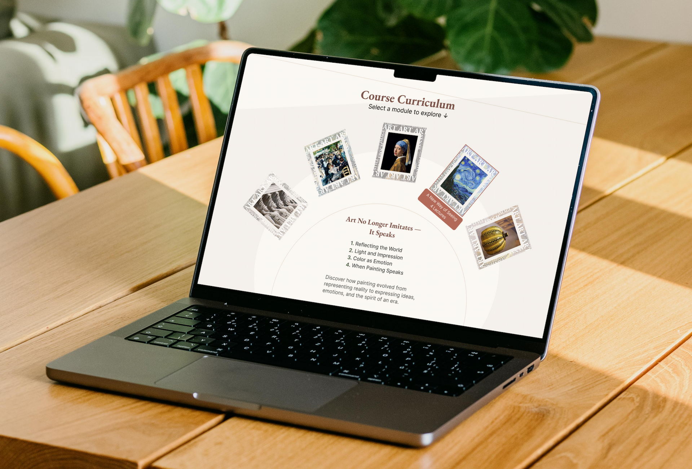
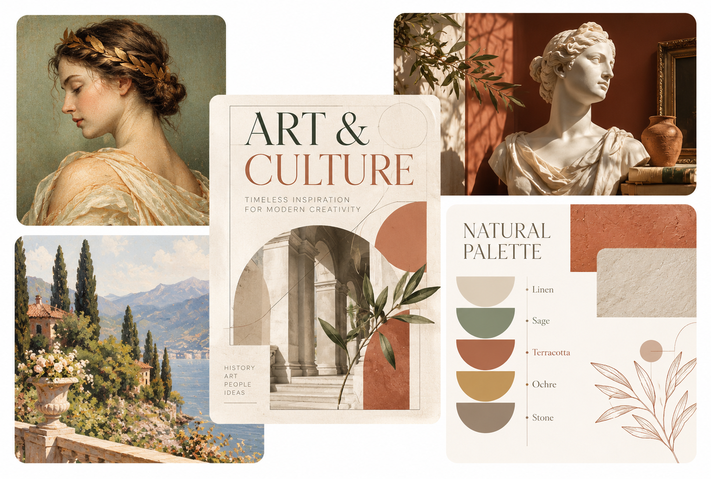
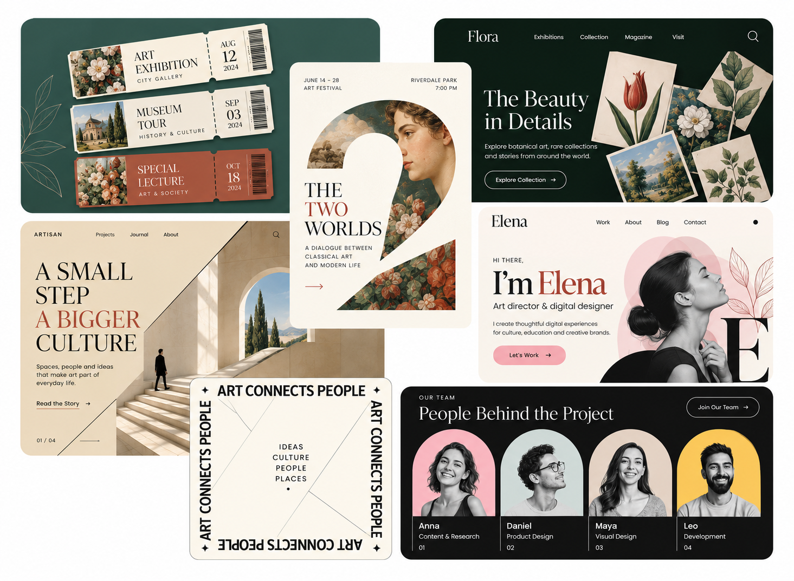
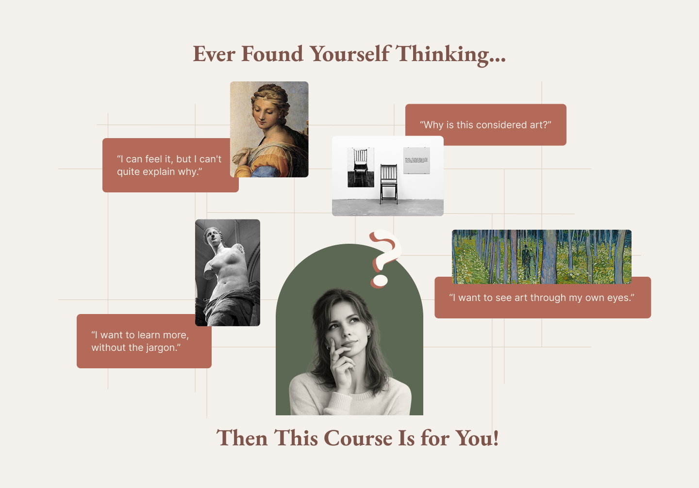
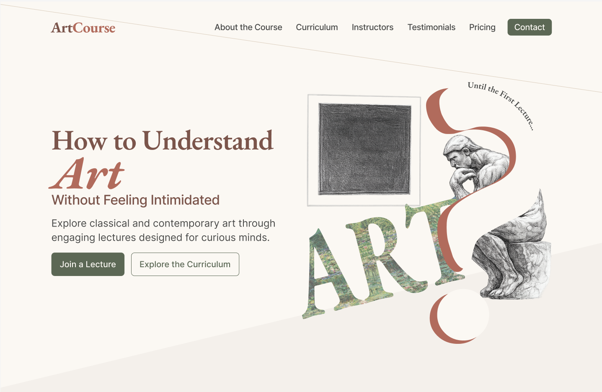
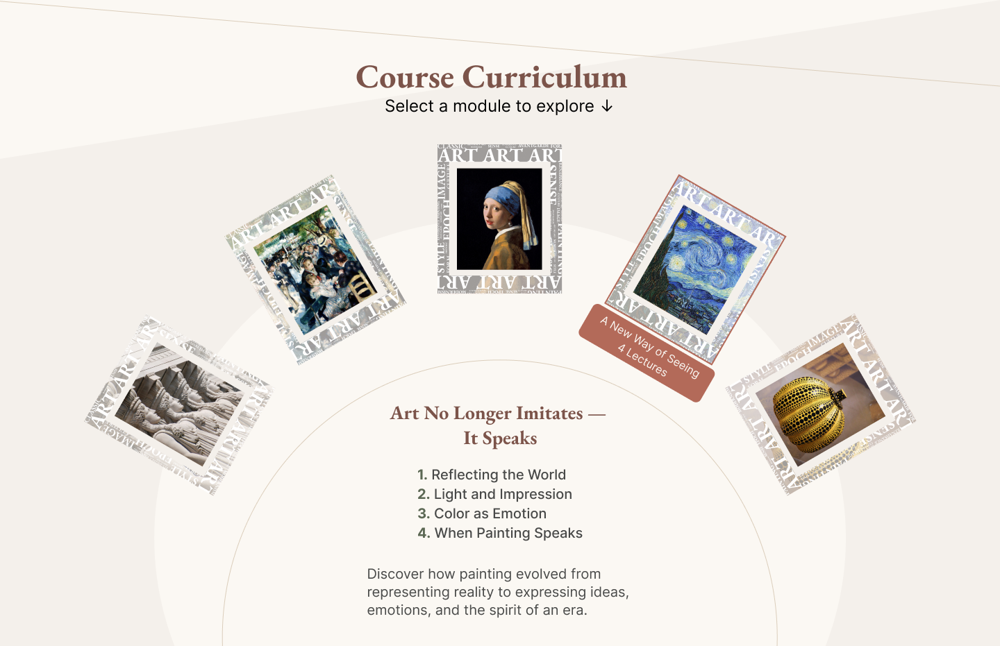
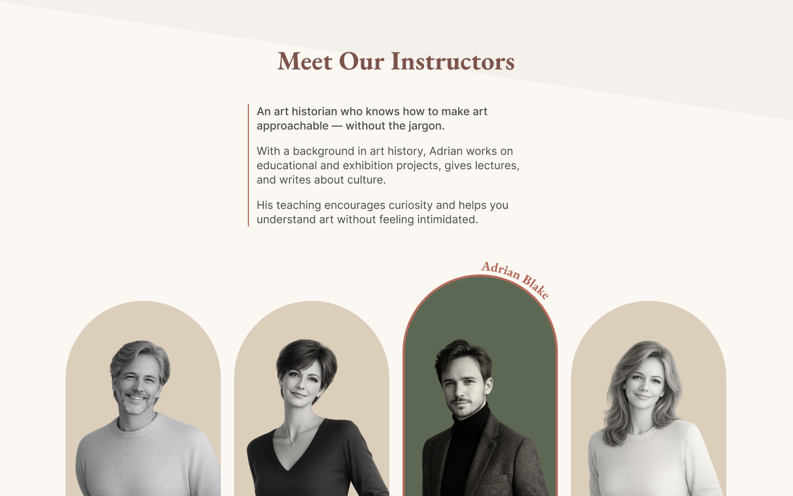
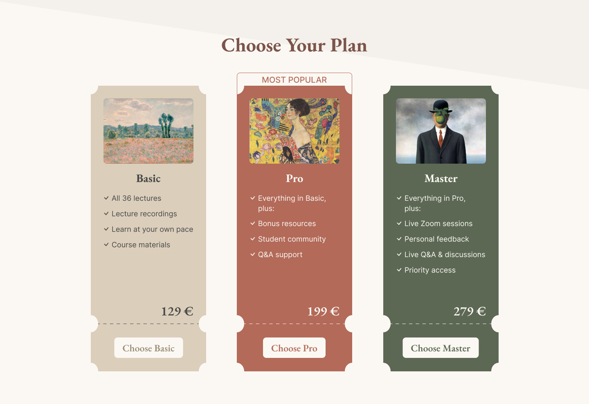
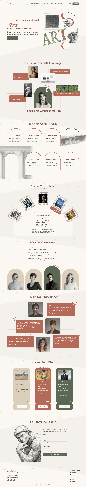

Project
Online Art Course
UX/UI DESIGN · CASE STUDY
Art without intimidation
A landing page for an online art course designed to make classical and contemporary art feel approachable, engaging and easy to understand.

ArtCourse is a landing page concept for an online lecture course about classical and contemporary art. The goal was to create an experience that feels cultured and trustworthy without becoming academic or intimidating.
Online Art Course
UX/UI Designer
Curious adults, 30–55
Figma
Art can feel complex or exclusive to people without an academic background. The main challenge was to reduce this barrier while preserving the cultural value of the course.
Avoid making the course feel overly academic or intimidating.
Keep the visual language cultured and trustworthy.
Present classical art through a modern digital experience.
The goal was to find the right balance between accessibility, culture and modernity.
I explored educational, cultural and editorial references to find a visual direction that feels sophisticated without creating distance from the user.


The final direction combines classical art with a contemporary editorial style. Warm colors, contrasting typography and collage elements make the experience feel cultural, yet approachable.

Creates a calm and welcoming atmosphere.
Classic serif adds character, while sans-serif keeps content clear and accessible.
Make the subject feel dynamic and less academic.
Generous spacing keeps the experience calm and focused.
I structured the landing page to guide users from initial interest to understanding, trust and a clear decision.
Each section answers a key question and helps the user move confidently toward a decision.
The main message addresses a key audience barrier directly: understanding art without feeling intimidated.

The course modules are presented through artworks rather than a conventional list. Selecting a module reveals its topic and lecture structure.

Instructor profiles and student testimonials make the course feel personal and help build trust before the pricing decision.

Three plans show a clear progression in value, while the Pro option is highlighted as the recommended choice.

Finding a balance between a sophisticated visual identity and an accessible interface.
Using artworks as functional parts of the experience without overwhelming the page.
Combining editorial character with clear, comfortable reading.
FINAL RESULT
The final landing page combines classical art with a contemporary digital experience. Its structure introduces the course step by step and guides users toward choosing a plan or asking for advice.
View Full Page ↗
Start visual decisions with the audience, not aesthetics alone.
Use references to find direction rather than copy solutions.
Expressive visual design still needs a clear UX structure.
Strong brand character should never reduce clarity.
Next Project
BuildWise ↗